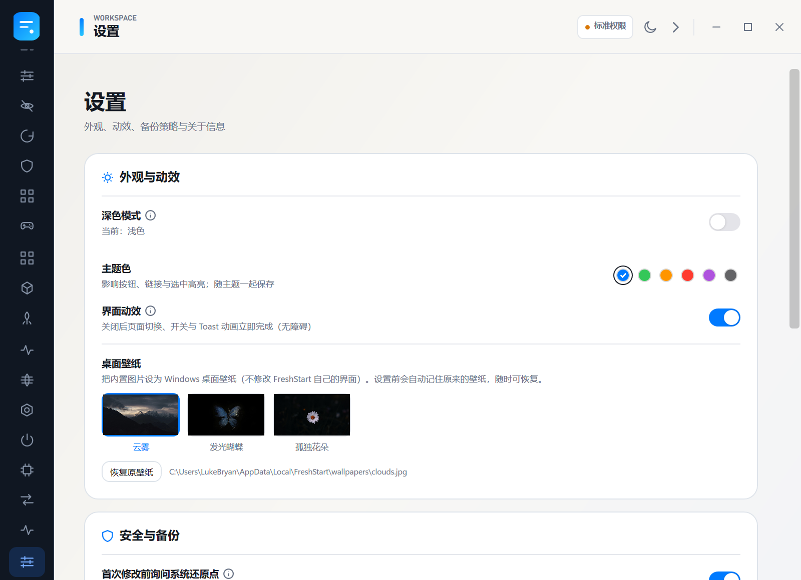

01 / WORKSPACE
开荒工作台
系统信息、常用入口和就绪评分集中在一个界面。先看清机器状态，再决定要改什么。
WINDOWS 11 / LOCAL-FIRST / OPEN SOURCE
FreshStart 把系统优化、软件安装、隐私设置、环境迁移和可回滚执行放进一个安静的桌面工作台。 不登录、不上传，所有操作留在本机。

ONE QUIET CONTROL DECK
常用设置不必散落在控制面板、注册表、PowerShell 和十几个安装器里。
系统信息、常用入口和就绪评分集中在一个界面。先看清机器状态，再决定要改什么。
写入前读取当前值、生成快照，校验失败时逆序回滚。操作历史可以查到每一步。
把多个系统步骤编排成一条工作流，先预检风险，再统一执行并生成 HTML / JSON 报告。
没有账户、没有云端控制台、没有遥测。设置、备份、日志和迁移包都只存在本机。
推荐软件、winget 安装更新、原生应用管理、卸载和残留清理放在同一条维护链路里。
服务、启动项、计划任务、驱动、DNS、电源、防火墙和 Windows 更新都有明确的边界。
ENVIRONMENT CLONER / LAB
在本机打包聊天数据、安装介质与开发工具链，在新系统离线释放。 不依赖官网重新下载，也不迁移登录令牌、浏览器密码或机器绑定许可证。
查看迁移边界
发现应用、聊天数据、多个开发环境版本与安全的环境变量。
生成带逐文件 SHA256 校验的本地 .fclone 包。
运行原厂安装器，再恢复用户数据、PATH 和环境变量。
REVERSIBLE BY DESIGN
FreshStart 不是“一键黑盒”。每个高风险动作都应说明将修改什么、影响在哪里、如何撤销。
先记录现有状态，而不是直接覆盖。
备份注册表、目录或服务状态。
读回结果，失败时自动回滚。
随时回到操作历史，查看或撤销。
CONTROL DECK
浅色工作区、深墨导航和克制的状态色。深色主题不是反转颜色，而是另一套完整的信息层级。


READY WHEN YOU ARE
选择轻量安装器，或使用包含 winget 离线组件的完整版本。只发布安装器，不发布 ZIP。
BEFORE YOU START
不会。FreshStart 不包含遥测，不要求账户，配置、日志、备份和报告都保存在本机。
明确支持回滚的写操作会先生成快照。卸载、原生应用移除、部分清理操作本身不可撤销，界面会在执行前说明。
不会迁移登录令牌、浏览器 Cookie、密码或机器绑定许可证。聊天记录和文件会恢复，登录需要用户自行完成。
不会。开发环境使用对应版本的原厂安装器部署，控制面板中的修复、更改和卸载由原厂安装器提供，FreshStart 只恢复用户数据与环境配置。